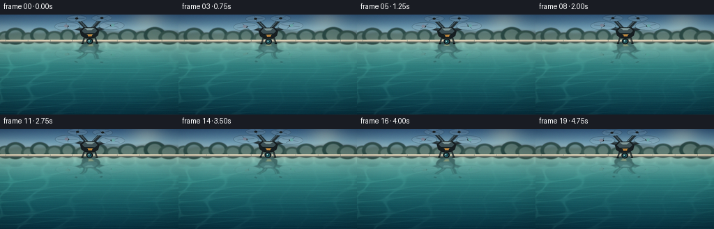
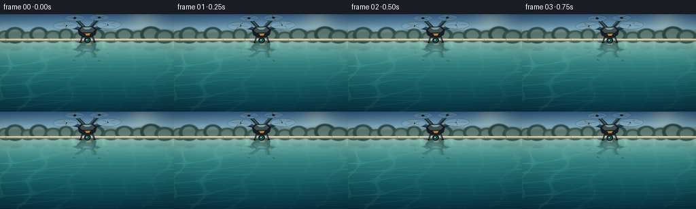
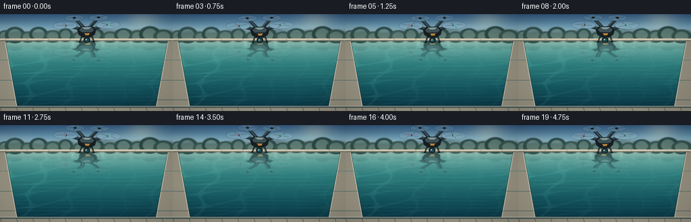
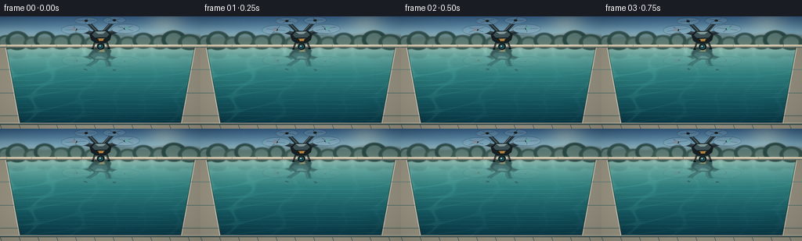

CODING AGENTS AS PIXEL WORLD MODELS
traex/DeepSeek-V4.1-Flash · phygen_059
点击播放 · 原生 RGB 像素
逐轮保存的候选
回放视频、检查图与代码变化。
每份候选均可单独播放。实际图片检查记录在下方工具轨迹中。
候选 01播放与检查图
点击播放 · 原生 RGB 像素


展开代码变化
--- 上一保存版本
+++ 本次保存版本
@@ -0,0 +1,496 @@
+from pathlib import Path
+import math
+
+import numpy as np
+from PIL import Image, ImageDraw, ImageFilter
+
+from artifact_io import save
+
+
+WIDTH = 256
+HEIGHT = 144
+FPS = 4
+FRAMES = 20
+SS = 4
+HORIZON = 40.0
+
+W = WIDTH * SS
+H = HEIGHT * SS
+
+
+def color_ramp(t, stops):
+ """Interpolate a sequence of (position, RGB) color stops."""
+ t = np.clip(t, 0.0, 1.0)
+ out = np.empty(t.shape + (3,), dtype=np.float32)
+ for index in range(len(stops) - 1):
+ p0, c0 = stops[index]
+ p1, c1 = stops[index + 1]
+ mask = (t >= p0) & (t <= p1)
+ local = np.zeros_like(t)
+ local[mask] = (t[mask] - p0) / max(p1 - p0, 1e-6)
+ out[mask] = (
+ np.asarray(c0, dtype=np.float32) * (1.0 - local[mask, None])
+ + np.asarray(c1, dtype=np.float32) * local[mask, None]
+ )
+ return out
+
+
+def make_background():
+ yy, xx = np.mgrid[0:H, 0:W].astype(np.float32)
+ x = xx / SS
+ y = yy / SS
+
+ image = np.zeros((H, W, 3), dtype=np.float32)
+
+ sky_mask = y < HORIZON
+ sky_t = np.clip(y / HORIZON, 0.0, 1.0)
+ sky = color_ramp(
+ sky_t,
+ [
+ (0.00, (49, 86, 122)),
+ (0.48, (107, 154, 177)),
+ (0.82, (178, 205, 202)),
+ (1.00, (224, 226, 211)),
+ ],
+ )
+
+ # Warm, low morning light above the right-hand tree line.
+ sun_dx = (x - 211.0) / 31.0
+ sun_dy = (y - 9.0) / 25.0
+ sun = np.exp(-(sun_dx * sun_dx + sun_dy * sun_dy) * 1.7)
+ sky += sun[:, :, None] * np.asarray((42.0, 30.0, 12.0), dtype=np.float32)
+
+ # Broad, almost still cloud veils.
+ veil = np.exp(-((y - 18.0 - 2.0 * np.sin(x * 0.035)) / 5.2) ** 2)
+ veil *= 0.20 + 0.10 * np.sin(x * 0.045 + 0.8)
+ sky = sky * (1.0 - veil[:, :, None] * 0.35) + np.asarray(
+ (232.0, 230.0, 216.0), dtype=np.float32
+ ) * veil[:, :, None] * 0.35
+ image[sky_mask] = sky[sky_mask]
+
+ water_mask = ~sky_mask
+ water_t = np.clip((y - HORIZON) / (HEIGHT - HORIZON), 0.0, 1.0)
+ water = color_ramp(
+ water_t,
+ [
+ (0.00, (149, 196, 188)),
+ (0.10, (92, 157, 153)),
+ (0.32, (45, 123, 123)),
+ (0.66, (19, 82, 91)),
+ (1.00, (6, 45, 60)),
+ ],
+ )
+
+ # Glassy sky reflection, strongest at the far edge.
+ fresnel = np.exp(-water_t * 7.5)
+ water += fresnel[:, :, None] * np.asarray((23.0, 21.0, 14.0), dtype=np.float32)
+
+ # Fine caustics and long, gentle surface undulations.
+ phase = x * 0.085 + y * 0.22 + 0.85 * np.sin(y * 0.14)
+ phase2 = x * 0.052 - y * 0.17 + 1.15 * np.sin(x * 0.034 + 0.6)
+ caustic = np.exp(-(((np.sin(phase) + np.sin(phase2)) * 0.58) / 0.13) ** 2)
+ caustic *= np.clip((water_t - 0.03) * 4.0, 0.0, 1.0)
+ caustic *= 0.34 + 0.23 * np.sin(x * 0.018 + 1.7)
+ water += caustic[:, :, None] * np.asarray((19.0, 29.0, 24.0), dtype=np.float32)
+
+ bands = (
+ np.sin(y * 1.18 + 0.65 * np.sin(x * 0.028))
+ + 0.45 * np.sin(y * 2.45 - x * 0.012)
+ )
+ band_light = np.exp(-(bands / 0.48) ** 2)
+ band_light *= np.clip((water_t - 0.08) * 3.2, 0.0, 1.0)
+ water += band_light[:, :, None] * np.asarray((5.0, 10.0, 9.0), dtype=np.float32)
+
+ image[water_mask] = water[water_mask]
+
+ rng = np.random.default_rng(22)
+ grain = rng.normal(0.0, 0.75, size=(H, W, 1)).astype(np.float32)
+ image += grain
+ base = Image.fromarray(np.clip(image, 0, 255).astype(np.uint8), "RGB").convert("RGBA")
+
+ # Distant, soft vegetation and a pale resort wall establish the place.
+ far = Image.new("RGBA", (W, H), (0, 0, 0, 0))
+ fd = ImageDraw.Draw(far)
+ fd.polygon(
+ [
+ (0, int(30 * SS)),
+ (int(26 * SS), int(26 * SS)),
+ (int(58 * SS), int(28 * SS)),
+ (int(89 * SS), int(24 * SS)),
+ (int(122 * SS), int(27 * SS)),
+ (int(154 * SS), int(23 * SS)),
+ (int(185 * SS), int(26 * SS)),
+ (int(219 * SS), int(22 * SS)),
+ (W, int(25 * SS)),
+ (W, int(HORIZON * SS)),
+ (0, int(HORIZON * SS)),
+ ],
+ fill=(76, 104, 100, 150),
+ )
+ far = far.filter(ImageFilter.GaussianBlur(1.8 * SS))
+ base = Image.alpha_composite(base, far)
+
+ trees = Image.new("RGBA", (W, H), (0, 0, 0, 0))
+ td = ImageDraw.Draw(trees)
+ tree_data = [
+ (8, 33, 12, 9, (45, 77, 70, 220)),
+ (22, 31, 15, 12, (39, 70, 65, 225)),
+ (41, 34, 11, 8, (47, 78, 69, 210)),
+ (57, 30, 14, 11, (35, 66, 62, 230)),
+ (78, 33, 13, 9, (45, 75, 68, 210)),
+ (97, 31, 11, 10, (37, 69, 64, 220)),
+ (119, 34, 12, 8, (46, 77, 69, 205)),
+ (140, 31, 14, 10, (35, 65, 61, 220)),
+ (163, 34, 12, 8, (44, 74, 67, 210)),
+ (183, 31, 14, 10, (36, 67, 63, 220)),
+ (204, 33, 12, 9, (43, 74, 67, 215)),
+ (222, 30, 16, 12, (34, 65, 61, 235)),
+ (242, 33, 15, 10, (42, 72, 65, 220)),
+ ]
+ for tx, ty, rx, ry, color in tree_data:
+ td.ellipse(
+ [
+ int((tx - rx) * SS),
+ int((ty - ry) * SS),
+ int((tx + rx) * SS),
+ int((ty + ry) * SS),
+ ],
+ fill=color,
+ )
+ td.ellipse(
+ [
+ int((tx - rx * 0.65) * SS),
+ int((ty - ry * 0.7) * SS),
+ int((tx + rx * 0.65) * SS),
+ int((ty + ry * 0.7) * SS),
+ ],
+ fill=(62, 91, 78, 105),
+ )
+ trees = trees.filter(ImageFilter.GaussianBlur(0.55 * SS))
+ base = Image.alpha_composite(base, trees)
+
+ # The far coping is a narrow limestone ribbon with a crisp shadow.
+ coping = Image.new("RGBA", (W, H), (0, 0, 0, 0))
+ cd = ImageDraw.Draw(coping)
+ cd.rectangle(
+ (0, int(36.3 * SS), W, int(HORIZON * SS)),
+ fill=(205, 193, 169, 255),
+ )
+ cd.rectangle(
+ (0, int(36.3 * SS), W, int(37.0 * SS)),
+ fill=(232, 219, 191, 255),
+ )
+ cd.rectangle(
+ (0, int(38.8 * SS), W, int(HORIZON * SS)),
+ fill=(119, 125, 116, 210),
+ )
+ for tx in range(8, WIDTH, 32):
+ cd.line(
+ (int(tx * SS), int(36.5 * SS), int(tx * SS), int(38.7 * SS)),
+ fill=(154, 149, 133, 90),
+ width=max(1, SS // 2),
+ )
+ base = Image.alpha_composite(base, coping)
+
+ # Soft mirrored tree color directly beneath the far edge.
+ refl = Image.new("RGBA", (W, H), (0, 0, 0, 0))
+ rd = ImageDraw.Draw(refl)
+ for tx, ty, rx, ry, _ in tree_data:
+ rd.ellipse(
+ [
+ int((tx - rx * 0.78) * SS),
+ int(39.0 * SS),
+ int((tx + rx * 0.78) * SS),
+ int((39.0 + ry * 1.25) * SS),
+ ],
+ fill=(17, 56, 58, 34),
+ )
+ refl = refl.filter(ImageFilter.GaussianBlur(1.1 * SS))
+ base = Image.alpha_composite(base, refl)
+
+ # Sparse, elongated highlights sell the glassy surface without looking noisy.
+ glints = Image.new("RGBA", (W, H), (0, 0, 0, 0))
+ gd = ImageDraw.Draw(glints)
+ glint_rows = [49, 54, 61, 68, 76, 84, 92, 104, 118]
+ for i, gy in enumerate(glint_rows):
+ length = 9 + (i * 7) % 21
+ gx = (18 + i * 47) % (WIDTH - length)
+ gd.line(
+ (int(gx * SS), int(gy * SS), int((gx + length) * SS), int(gy * SS)),
+ fill=(195, 226, 211, 18 + (i % 3) * 5),
+ width=max(1, SS // 2),
+ )
+ glints = glints.filter(ImageFilter.GaussianBlur(0.7 * SS))
+ base = Image.alpha_composite(base, glints)
+
+ # Gentle edge vignette keeps attention on the drone.
+ yy2, xx2 = np.mgrid[0:H, 0:W].astype(np.float32)
+ vx = (xx2 / W - 0.5) / 0.55
+ vy = (yy2 / H - 0.52) / 0.62
+ vignette = np.clip((vx * vx + vy * vy - 0.45) * 0.13, 0.0, 0.16)
+ arr = np.asarray(base).astype(np.float32)
+ arr[:, :, :3] *= 1.0 - vignette[:, :, None]
+ return Image.fromarray(np.clip(arr, 0, 255).astype(np.uint8), "RGBA")
+
+
+def draw_drone_sprite(rotor_phase):
+ """A compact, readable quadcopter sprite, rendered at 4x supersampling."""
+ sw, sh = 100, 58
+ sprite = Image.new("RGBA", (sw * SS, sh * SS), (0, 0, 0, 0))
+ d = ImageDraw.Draw(sprite, "RGBA")
+
+ def pt(x, y):
+ return (x * SS, y * SS)
+
+ def ellipse(cx, cy, rx, ry, fill=None, outline=None, width=1):
+ d.ellipse(
+ [
+ int((cx - rx) * SS),
+ int((cy - ry) * SS),
+ int((cx + rx) * SS),
+ int((cy + ry) * SS),
+ ],
+ fill=fill,
+ outline=outline,
+ width=max(1, int(width * SS)),
+ )
+
+ body = (50, 32)
+ rotors = [
+ (32, 13, 14.5, 4.7, -0.08),
+ (68, 13, 14.5, 4.7, 0.08),
+ (18, 24, 18.0, 6.0, -0.06),
+ (82, 24, 18.0, 6.0, 0.06),
+ ]
+
+ # Arm shadows and graphite arms.
+ for rx, ry, _, _, _ in rotors:
+ d.line(
+ [pt(body[0], body[1]), pt(rx, ry)],
+ fill=(8, 14, 16, 155),
+ width=int(5.2 * SS),
+ )
+ for rx, ry, _, _, _ in rotors:
+ d.line(
+ [pt(body[0], body[1]), pt(rx, ry)],
+ fill=(35, 47, 51, 255),
+ width=int(3.7 * SS),
+ )
+ d.line(
+ [pt(body[0] - 0.8, body[1] - 0.8), pt(rx, ry - 0.8)],
+ fill=(110, 130, 132, 105),
+ width=max(1, SS // 2),
+ )
+
+ # Rotor wash, hubs, and a restrained set of blurred blade streaks.
+ for index, (rx, ry, rxx, ryy, tilt) in enumerate(rotors):
+ ellipse(rx, ry, rxx, ryy, fill=(210, 225, 221, 26), outline=(25, 39, 42, 92), width=0.7)
+ ellipse(rx, ry, rxx * 0.77, ryy * 0.75, outline=(225, 238, 230, 24), width=0.45)
+ for blade in range(4):
+ angle = rotor_phase + index * 0.67 + blade * (math.pi / 2.0) + tilt
+ length = rxx * (0.78 if blade % 2 == 0 else 0.70)
+ x1 = rx + math.cos(angle) * length
+ y1 = ry + math.sin(angle) * ryy * 0.72
+ x2 = rx - math.cos(angle) * length * 0.30
+ y2 = ry - math.sin(angle) * ryy * 0.72 * 0.30
+ d.line(
+ [pt(x1, y1), pt(x2, y2)],
+ fill=(20, 31, 34, 75),
+ width=max(1, int(0.8 * SS)),
+ )
+ ellipse(rx, ry, 2.5, 1.6, fill=(23, 31, 34, 255), outline=(143, 161, 158, 135), width=0.35)
+
+ # Landing legs sit behind the body shell.
+ d.line([pt(43, 39), pt(39.5, 49)], fill=(10, 16, 18, 255), width=int(2.0 * SS))
+ d.line([pt(57, 39), pt(60.5, 49)], fill=(10, 16, 18, 255), width=int(2.0 * SS))
+ d.line([pt(43, 39), pt(39.5, 49)], fill=(87, 103, 105, 110), width=max(1, SS // 2))
+ d.line([pt(57, 39), pt(60.5, 49)], fill=(87, 103, 105, 110), width=max(1, SS // 2))
+ d.line([pt(38.4, 49), pt(41.2, 49)], fill=(5, 10, 12, 255), width=int(1.3 * SS))
+ d.line([pt(58.8, 49), pt(61.8, 49)], fill=(5, 10, 12, 255), width=int(1.3 * SS))
+
+ # Main body and its faceted upper shell.
+ d.polygon(
+ [
+ pt(41, 26),
+ pt(59, 26),
+ pt(64, 31),
+ pt(62, 38),
+ pt(56, 42),
+ pt(44, 42),
+ pt(38, 38),
+ pt(36, 31),
+ ],
+ fill=(22, 30, 33, 255),
+ )
+ d.polygon(
+ [
+ pt(43, 27),
+ pt(57, 27),
+ pt(61, 31),
+ pt(57, 35),
+ pt(43, 35),
+ pt(39, 31),
+ ],
+ fill=(60, 79, 84, 255),
+ )
+ d.polygon(
+ [
+ pt(43, 27),
+ pt(57, 27),
+ pt(53, 30),
+ pt(47, 30),
+ ],
+ fill=(128, 153, 154, 255),
+ )
+ d.line([pt(42, 35), pt(58, 35)], fill=(12, 20, 23, 235), width=int(0.8 * SS))
+ d.polygon(
+ [
+ pt(47, 36),
+ pt(54, 36),
+ pt(53, 39),
+ pt(48, 39),
+ ],
+ fill=(197, 133, 58, 235),
+ )
+ d.line([pt(46, 36), pt(55, 36)], fill=(238, 181, 88, 150), width=max(1, SS // 2))
+
+ # Underslung camera gimbal.
+ d.line([pt(50, 41), pt(50, 44)], fill=(13, 20, 22, 255), width=int(2.2 * SS))
+ ellipse(50, 46.0, 5.0, 4.5, fill=(17, 24, 27, 255), outline=(87, 105, 107, 135), width=0.45)
+ ellipse(50, 46.2, 2.8, 2.6, fill=(19, 68, 77, 255), outline=(106, 181, 184, 210), width=0.38)
+ ellipse(49.2, 45.5, 0.85, 0.75, fill=(189, 242, 234, 235))
+
+ # Navigation lights give the silhouette a small, bright point of color.
+ ellipse(16.5, 23.6, 1.4, 1.0, fill=(239, 68, 49, 255))
+ ellipse(83.5, 23.6, 1.4, 1.0, fill=(74, 229, 130, 255))
+ ellipse(16.5, 23.6, 2.7, 2.1, fill=(255, 74, 50, 38))
+ ellipse(83.5, 23.6, 2.7, 2.1, fill=(74, 255, 135, 34))
+
+ return sprite
+
+
+def make_reflection(sprite, frame_phase):
+ reflected = sprite.transpose(Image.Transpose.FLIP_TOP_BOTTOM)
+ arr = np.asarray(reflected).copy()
+ h, w = arr.shape[:2]
+ out = np.zeros_like(arr)
+
+ # Water breaks the mirror into slightly different horizontal bands.
+ for row in range(h):
+ yn = row / max(1, h - 1)
+ shift = (
+ math.sin(row * 0.105 + frame_phase * 1.35) * (0.45 + 2.1 * yn)
+ + math.sin(row * 0.031 - frame_phase * 0.65) * 0.75
+ ) * SS
+ shift = int(round(shift))
+ out[row] = np.roll(arr[row], shift, axis=0)
+
+ # Cool the reflection toward the pool color and fade it with distance.
+ alpha_gain = np.linspace(0.78, 0.16, h, dtype=np.float32)[:, None]
+ out[:, :, 3] = np.clip(out[:, :, 3].astype(np.float32) * alpha_gain, 0, 255).astype(np.uint8)
+ water_tint = np.asarray((31.0, 105.0, 108.0), dtype=np.float32)
+ out[:, :, :3] = (
+ out[:, :, :3].astype(np.float32) * 0.66 + water_tint[None, None, :] * 0.34
+ ).clip(0, 255).astype(np.uint8)
+
+ reflection = Image.fromarray(out, "RGBA")
+ reflection = reflection.filter(ImageFilter.GaussianBlur(0.48 * SS))
+ return reflection
+
+
+def make_dynamic_water(frame_phase):
+ layer = Image.new("RGBA", (W, H), (0, 0, 0, 0))
+ d = ImageDraw.Draw(layer)
+
+ # Slow bands of reflected skylight drift across the pool.
+ for i in range(5):
+ gy = 50 + i * 16
+ gy += 1.1 * math.sin(frame_phase + i * 1.4)
+ x0 = (10 + i * 43 + 7 * math.sin(frame_phase * 0.7 + i)) % (WIDTH - 45)
+ x1 = x0 + 25 + (i * 11) % 18
+ d.line(
+ (int(x0 * SS), int(gy * SS), int(x1 * SS), int(gy * SS)),
+ fill=(176, 225, 212, 13),
+ width=max(1, SS // 2),
+ )
+
+ # Faint, expanding surface ring under the hovering drone.
+ ring_phase = (frame_phase * 0.38) % 1.0
+ rx = (26 + 11 * ring_phase) * SS
+ ry = (5 + 2.4 * ring_phase) * SS
+ cx, cy = 128 * SS, 51.5 * SS
+ d.ellipse(
+ [int(cx - rx), int(cy - ry), int(cx + rx), int(cy + ry)],
+ outline=(203, 235, 220, int(28 * (1.0 - ring_phase))),
+ width=max(1, SS // 2),
+ )
+ return layer
+
+
+def render_frame(background, frame_index):
+ phase = 2.0 * math.pi * frame_index / FRAMES
+ bob = 0.75 * math.sin(phase + 0.25)
+ sway = 0.85 * math.sin(phase * 0.5 + 0.4)
+ tilt = 1.25 * math.sin(phase + 0.95)
+
+ frame = background.copy()
+ frame = Image.alpha_composite(frame, make_dynamic_water(phase))
+
+ rotor_phase = frame_index * 0.43 + 0.2
+ sprite = draw_drone_sprite(rotor_phase)
+ sprite = sprite.rotate(tilt, resample=Image.Resampling.BICUBIC, expand=False)
+
+ drone_cx = 128.0 + sway
+ drone_cy = 24.0 + bob
+ sprite_top = (drone_cy - 32.0) * SS
+
+ reflection = make_reflection(sprite, phase)
+ # Mirroring around the pool's far edge places the reflected rotor craft
+ # naturally on the water while keeping its feet attached to the surface.
+ reflection_top = (2.0 * HORIZON - drone_cy - 32.0) * SS - 1
+ water_clip = Image.new("RGBA", (W, H), (0, 0, 0, 0))
+ water_clip.paste(
+ reflection,
+ (int(round((drone_cx - 50.0) * SS)), int(round(reflection_top))),
+ )
+ clip_mask = Image.new("L", (W, H), 0)
+ ImageDraw.Draw(clip_mask).rectangle(
+ (0, int(HORIZON * SS), W, H),
+ fill=255,
+ )
+ frame.paste(water_clip, (0, 0), Image.composite(water_clip.getchannel("A"), Image.new("L", (W, H), 0), clip_mask))
+
+ # A soft contact glow prevents the drone from looking pasted onto the sky.
+ glow = Image.new("RGBA", (W, H), (0, 0, 0, 0))
+ glow.paste(
+ sprite,
+ (int(round((drone_cx - 50.0) * SS)), int(round(sprite_top))),
+ )
+ glow = glow.filter(ImageFilter.GaussianBlur(2.1 * SS))
+ glow_arr = np.asarray(glow).copy()
+ glow_arr[:, :, 3] = (glow_arr[:, :, 3].astype(np.float32) * 0.08).astype(np.uint8)
+ frame = Image.alpha_composite(frame, Image.fromarray(glow_arr, "RGBA"))
+
+ frame.paste(
+ sprite,
+ (int(round((drone_cx - 50.0) * SS)), int(round(sprite_top))),
+ sprite,
+ )
+
+ frame = frame.convert("RGB").resize((WIDTH, HEIGHT), Image.Resampling.LANCZOS)
+ out = np.asarray(frame).astype(np.int16)
+ # A barely perceptible final grain avoids banding in the gradients.
+ rng = np.random.default_rng(1000 + frame_index)
+ out += rng.integers(-1, 2, size=out.shape, dtype=np.int16)
+ return np.clip(out, 0, 255).astype(np.uint8)
+
+
+def main():
+ case_dir = Path(__file__).resolve().parent
+ background = make_background()
+ frames = np.stack([render_frame(background, i) for i in range(FRAMES)])
+ save(frames, case_dir)
+
+
+if __name__ == "__main__":
+ main()
候选 02播放与检查图
点击播放 · 原生 RGB 像素


展开代码变化
--- 上一保存版本
+++ 本次保存版本
@@ -106,7 +106,7 @@
rng = np.random.default_rng(22)
grain = rng.normal(0.0, 0.75, size=(H, W, 1)).astype(np.float32)
image += grain
- base = Image.fromarray(np.clip(image, 0, 255).astype(np.uint8), "RGB").convert("RGBA")
+ base = Image.fromarray(np.clip(image, 0, 255).astype(np.uint8)).convert("RGBA")
# Distant, soft vegetation and a pale resort wall establish the place.
far = Image.new("RGBA", (W, H), (0, 0, 0, 0))
@@ -223,6 +223,78 @@
glints = glints.filter(ImageFilter.GaussianBlur(0.7 * SS))
base = Image.alpha_composite(base, glints)
+ # A narrow limestone deck frames the water as a pool rather than open water.
+ deck = Image.new("RGBA", (W, H), (0, 0, 0, 0))
+ dd = ImageDraw.Draw(deck)
+ left_deck = [
+ (0, int(HORIZON * SS)),
+ (int(7.0 * SS), int(HORIZON * SS)),
+ (int(26.0 * SS), H),
+ (0, H),
+ ]
+ right_deck = [
+ (int(249.0 * SS), int(HORIZON * SS)),
+ (W, int(HORIZON * SS)),
+ (W, H),
+ (int(230.0 * SS), H),
+ ]
+ dd.polygon(left_deck, fill=(150, 145, 128, 255))
+ dd.polygon(right_deck, fill=(145, 140, 124, 255))
+ dd.line(
+ [(int(7.0 * SS), int(HORIZON * SS)), (int(26.0 * SS), H)],
+ fill=(226, 216, 194, 255),
+ width=int(1.1 * SS),
+ )
+ dd.line(
+ [(int(249.0 * SS), int(HORIZON * SS)), (int(230.0 * SS), H)],
+ fill=(218, 208, 188, 255),
+ width=int(1.1 * SS),
+ )
+ dd.line(
+ [(int(8.0 * SS), int(HORIZON * SS)), (int(27.0 * SS), H)],
+ fill=(61, 79, 77, 180),
+ width=int(0.55 * SS),
+ )
+ dd.line(
+ [(int(248.0 * SS), int(HORIZON * SS)), (int(229.0 * SS), H)],
+ fill=(55, 73, 72, 180),
+ width=int(0.55 * SS),
+ )
+ for fraction in (0.27, 0.56, 0.84):
+ gy = HORIZON + fraction * (HEIGHT - HORIZON)
+ left_x = 7.0 + (26.0 - 7.0) * fraction
+ right_x = 249.0 - (249.0 - 230.0) * fraction
+ dd.line(
+ [(0, int(gy * SS)), (int(left_x * SS), int(gy * SS))],
+ fill=(92, 98, 91, 95),
+ width=max(1, SS // 2),
+ )
+ dd.line(
+ [(int(right_x * SS), int(gy * SS)), (W, int(gy * SS))],
+ fill=(87, 93, 87, 95),
+ width=max(1, SS // 2),
+ )
+ dd.rectangle(
+ (0, int(136.5 * SS), W, H),
+ fill=(147, 142, 125, 255),
+ )
+ dd.rectangle(
+ (0, int(136.5 * SS), W, int(137.4 * SS)),
+ fill=(217, 207, 186, 255),
+ )
+ dd.rectangle(
+ (0, int(137.4 * SS), W, int(139.0 * SS)),
+ fill=(79, 91, 87, 205),
+ )
+ for tx in range(0, WIDTH, 24):
+ dd.line(
+ (int(tx * SS), int(139.0 * SS), int((tx + 2) * SS), H),
+ fill=(91, 97, 90, 80),
+ width=max(1, SS // 2),
+ )
+ deck = deck.filter(ImageFilter.GaussianBlur(0.18 * SS))
+ base = Image.alpha_composite(base, deck)
+
# Gentle edge vignette keeps attention on the drone.
yy2, xx2 = np.mgrid[0:H, 0:W].astype(np.float32)
vx = (xx2 / W - 0.5) / 0.55
@@ -230,7 +302,7 @@
vignette = np.clip((vx * vx + vy * vy - 0.45) * 0.13, 0.0, 0.16)
arr = np.asarray(base).astype(np.float32)
arr[:, :, :3] *= 1.0 - vignette[:, :, None]
- return Image.fromarray(np.clip(arr, 0, 255).astype(np.uint8), "RGBA")
+ return Image.fromarray(np.clip(arr, 0, 255).astype(np.uint8))
def draw_drone_sprite(rotor_phase):
@@ -386,14 +458,14 @@
out[row] = np.roll(arr[row], shift, axis=0)
# Cool the reflection toward the pool color and fade it with distance.
- alpha_gain = np.linspace(0.78, 0.16, h, dtype=np.float32)[:, None]
+ alpha_gain = np.linspace(0.96, 0.19, h, dtype=np.float32)[:, None]
out[:, :, 3] = np.clip(out[:, :, 3].astype(np.float32) * alpha_gain, 0, 255).astype(np.uint8)
water_tint = np.asarray((31.0, 105.0, 108.0), dtype=np.float32)
out[:, :, :3] = (
- out[:, :, :3].astype(np.float32) * 0.66 + water_tint[None, None, :] * 0.34
+ out[:, :, :3].astype(np.float32) * 0.74 + water_tint[None, None, :] * 0.26
).clip(0, 255).astype(np.uint8)
- reflection = Image.fromarray(out, "RGBA")
+ reflection = Image.fromarray(out)
reflection = reflection.filter(ImageFilter.GaussianBlur(0.48 * SS))
return reflection
@@ -469,7 +541,7 @@
glow = glow.filter(ImageFilter.GaussianBlur(2.1 * SS))
glow_arr = np.asarray(glow).copy()
glow_arr[:, :, 3] = (glow_arr[:, :, 3].astype(np.float32) * 0.08).astype(np.uint8)
- frame = Image.alpha_composite(frame, Image.fromarray(glow_arr, "RGBA"))
+ frame = Image.alpha_composite(frame, Image.fromarray(glow_arr))
frame.paste(
sprite,
可观测工具轨迹
实际执行的命令与返回图片。
命令 1exit 0
/bin/bash -c "pwd && rg --files -g 'prompt.txt' -g 'GENERATION_RULES.md' -g 'task_spec.json' -g '"'!node_modules'"'"
命令 2exit 0
/bin/bash -c 'ls -la'
命令 3exit 0
/bin/bash -c 'cat prompt.txt'
命令 4exit 0
/bin/bash -c 'cat GENERATION_RULES.md'
命令 5exit 0
/bin/bash -c 'cat task_spec.json'
命令 6exit 0
/bin/bash -c "sed -n '1,240p' artifact_io.py"
命令 7exit 0
/bin/bash -c 'python generate.py'
命令 8exit 0
/bin/bash -c 'ls -lh inspection.png transition_check.png pixels.npz index.html frames/00.png'
命令 9exit 0
/bin/bash -c 'command -v chafa || command -v viu || command -v jp2 || true'
命令 10exit 0
/bin/bash -c "python - <<'PY'
from PIL import Image
import numpy as np
for name in ['frames/00.png','frames/10.png','frames/19.png']:
im=np.asarray(Image.open(name))
print(name, 'mean', im.mean((0,1)).round(1), 'range', im.min(), im.max())
# analyze dark sprite region and reflection
for i in [0,5,10,15,19]:
im=np.asarray(Image.open(f'frames/{i:02d}.png')).astype(float)
top=im[0:60,85:170]
water=im[42:100,80:175]
print(i, 'top mean',top.mean().round(1),'water mean',water.mean().round(1),'top dark', (top.mean(2)<50).sum(),'water dark',(water.mean(2)<50).sum())
PY"命令 11exit 0
/bin/bash -c "python - <<'PY'
from PIL import Image, ImageOps
import numpy as np
chars='@%#*+=-:. '
for name in ['frames/00.png','frames/10.png']:
im=Image.open(name).convert('L').resize((128,72))
a=np.asarray(im)
print('\\n',name)
for row in a:
print(''.join(chars[min(9,int(v)*10//256)] for v in row))
PY"命令 12exit 0
/bin/bash -c 'command -v img2txt || command -v jp2 || command -v viu || command -v timg || command -v kitty || true'
命令 13exit 0
/bin/bash -c "python - <<'PY'
from PIL import Image
im=Image.open('inspection.png')
print(im.size)
# crop sheet for frame 0 from known arrangement
im.crop((0,0,256*2, (144+21)*2)).resize((1024,660)).save('.tmp/detail.png')
PY"命令 14exit 0
/bin/bash -c "python - <<'PY'
from PIL import Image
import numpy as np
im=np.asarray(Image.open('frames/00.png').resize((64,36),Image.Resampling.LANCZOS))
for y in range(0,36,2):
line=''
for x in range(64):
a=im[y,x]; b=im[min(y+1,35),x]
line += f'\\033[38;2;{a[0]};{a[1]};{a[2]}m\\033[48;2;{b[0]};{b[1]};{b[2]}mâ'
print(line+'\\033[0m')
PY"命令 15exit 0
/bin/bash -c "sed -n '1,220p' player_template.html && python - <<'PY' import importlib.util for m in ['numpy','PIL','cv2','matplotlib','imageio','scipy']: print(m, bool(importlib.util.find_spec(m))) PY"
命令 16exit 0
/bin/bash -c "python - <<'PY'
from PIL import Image
import numpy as np
imgs=[np.asarray(Image.open(f'frames/{i:02d}.png')).astype(np.int16) for i in range(20)]
for i in range(1,20):
d=np.abs(imgs[i]-imgs[i-1])
print(i, round(float(d.mean()),3), round(float((d.max(2)>10).mean()*100),2))
# bounding boxes of non-water differences per frame (pixels differing > 12 from first)
a=imgs[0]
for i in [0,5,10,15,19]:
d=np.abs(imgs[i]-a).max(2)>20
ys,xs=np.where(d)
print('diffbox',i, (xs.min(),ys.min(),xs.max(),ys.max()) if len(xs) else None, 'n',len(xs))
PY"命令 17exit 0
/bin/bash -c "python - <<'PY'
from generate import draw_drone_sprite
from PIL import Image
import numpy as np
s=draw_drone_sprite(.4)
a=np.asarray(s.resize((80,46),Image.Resampling.LANCZOS)).astype(float)
rgb=a[:,:,:3]; alpha=a[:,:,3]
lum=(rgb.mean(2)*alpha/255)+120*(1-alpha/255)
chars='@%#*+=-:. '
for row in lum[::2]:
print(''.join(chars[min(9,int(v)*10//256)] for v in row[::1]))
PY"命令 18exit 0
/bin/bash -c "python - <<'PY'
from PIL import Image
import numpy as np
s=Image.open('frames/00.png').crop((78,0,178,69)).resize((80,55))
a=np.asarray(s).astype(float).mean(2)
chars='@%#*+=-:. '
for row in a[::2]:
print(''.join(chars[min(9,int(v)*10//256)] for v in row))
PY"命令 19exit 0
/bin/bash -c "python - <<'PY'
from PIL import Image
import numpy as np
s=Image.open('frames/00.png').crop((78,0,178,70))
# nearest upscale inspect pixels coarse, 100x70 -> 50x35 grouped 2x2 max darkness
a=np.asarray(s).astype(float).mean(2)
chars='@%#*+=-:. '
for row in a.reshape(35,2,50,2).mean((1,3)):
print(''.join(chars[min(9,int(v)*10//256)] for v in row))
PY"命令 20exit 1
/bin/bash -c "python - <<'PY'
from pathlib import Path
import json,re,base64
s=Path('index.html').read_text()
m=re.search(r'const DATA=(\\{.*?\\}),W=',s)
data=json.loads(m.group(1))
print('payload',len(s),'frames',data['frames'],'deltas',len(data['deltas']),'caption',data['caption'])
for key in ['first']+data['deltas'][:2]:
b=base64.b64decode(key); print(len(b),len(b)//4)
PY"命令 21exit 0
/bin/bash -c "python - <<'PY'
from pathlib import Path
import json,re,base64
s=Path('index.html').read_text(); data=json.loads(re.search(r'const DATA=(\\{.*?\\}),W=',s).group(1))
for key in [data['first']]+data['deltas'][:3]:
b=base64.b64decode(key); print('decoded',len(b), 'uint32',len(b)//4)
PY"命令 22exit 0
/bin/bash -c "python - <<'PY'
from PIL import Image
import numpy as np
im=np.asarray(Image.open('frames/00.png')).astype(float)
for y in range(42,85,4):
c=im[y,100:156].mean(0); s=(im[y,40:96].mean(0)+im[y,160:216].mean(0))/2
print(y, 'center',c.round(0).astype(int), 'sides',s.round(0).astype(int), 'delta', (c-s).round(0).astype(int))
PY"命令 23exit 0
/bin/bash -c 'python generate.py'
命令 24exit 0
/bin/bash -c "python - <<'PY'
from PIL import Image
import numpy as np
imgs=[np.asarray(Image.open(f'frames/{i:02d}.png')).astype(np.int16) for i in range(20)]
print('shapes',set(i.shape for i in imgs),'unique frames',len({i.tobytes() for i in imgs}))
print('diff means',[round(float(np.abs(imgs[i]-imgs[i-1]).mean()),3) for i in range(1,20)])
for i in [0,5,10,15,19]:
im=imgs[i]
print(i,'rgb mean',im.mean((0,1)).round(1),'deck',im[136:144,0:12].mean((0,1)).round(1),'reflection',im[42:68,102:154].mean((0,1)).round(1))
PY"命令 25exit 0
/bin/bash -c "python - <<'PY'
from PIL import Image
import numpy as np
im=Image.open('frames/00.png')
a=np.asarray(im).astype(float).mean(2)
chars='@%#*+=-:. '
for row in a.reshape(48,3,64,4).mean((1,3)):
print(''.join(chars[min(9,int(v)*10//256)] for v in row))
PY"命令 26exit 0
/bin/bash -c "python - <<'PY'
from PIL import Image
import numpy as np
for i in [0,7,14]:
a=np.asarray(Image.open(f'frames/{i:02d}.png')).astype(float).mean(2)
print('\\nFRAME',i)
# ascii crop drone+reflection 80:176, 0:80 in 2x3 blocks
crop=a[0:80,80:176]
chars='@%#*+=-:. '
for row in crop.reshape(40,2,48,2).mean((1,3)):
print(''.join(chars[min(9,int(v)*10//256)] for v in row))
PY"命令 27exit 0
/bin/bash -c "python - <<'PY'
from pathlib import Path
import base64, json, re
import numpy as np
from PIL import Image
root = Path('.')
spec = json.loads((root / 'task_spec.json').read_text())
html = (root / 'index.html').read_text()
data = json.loads(re.search(r'const DATA=(\\{.*?\\}),W=', html).group(1))
def unpack(encoded):
return np.frombuffer(base64.b64decode(encoded), dtype='<u4').copy()
frames = [unpack(data['first'])]
for delta in data['deltas']:
current = frames[-1].copy()
packet = unpack(delta)
i = 0
while i < len(packet):
start, count = int(packet[i]), int(packet[i + 1])
current[start:start + count] = packet[i + 2:i + 2 + count]
i += count + 2
frames.append(current)
assert (spec['width'], spec['height'], spec['frames'], spec['fps']) == (256, 144, 20, 4.0)
assert data['width'] == 256 and data['height'] == 144 and data['frames'] == 20
assert len(frames) == 20 and len(data['deltas']) == 19
saved = np.load(root / 'pixels.npz')['pixels']
assert saved.shape == (144, 256, 20)
for index, packed in enumerate(frames):
expected = np.stack(((packed >> 16) & 255, (packed >> 8) & 255, packed & 255), axis=-1)
expected = expected.reshape(144, 256, 3)
disk = np.asarray(Image.open(root / 'frames' / f'{index:02d}.png'))
assert np.array_equal(expected, disk)
assert np.array_equal(packed.reshape(144, 256), saved[:, :, index])
print('validated: 20/20 RGB frames, player deltas, PNGs, and pixels.npz agree')
print('frame size: 256x144 | fps: 4 | duration: 5.0s')
print('artifacts:', ', '.join(p.name for p in sorted(root.iterdir()) if p.is_file() or p.name in {'frames'}))
PY"命令 28exit 0
/bin/bash -c 'git status --short 2>/dev/null || true; ls -lh frames | tail -n 3; du -sh .'
保存候选 2 份；完成命令 28 次；可验证图片返回 0 张。原始 API 响应与完整日志保留在本地。